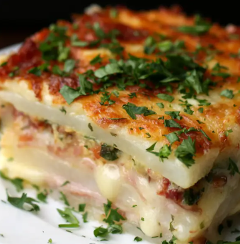

Potato Lasagna

Description
This savory potato lasagna is a delicious twist on a classic dish. The layers of tender potatoes, creamy cheese, and hearty meat sauce create a mouth-watering experience.
Ingredients
- 5 potatoes, peeled
- 2 teaspoons salt
- 1 teaspoon pepper
- 8 slices ham
- 7 slices mozzarella cheese
- 5 slices bacon, cooked and crumbled
- ¼ cup fresh parsley(10 g), chopped
- 2 cups shredded mozzarella cheese(200 g)
- 1 cup heavy cream(240 mL)
- 2 eggs
- Slice the peeled potatoes into ¼ inch (½ cm) slices.
- Season the potatoes with salt and pepper, tossing them to make sure they’re coated evenly.
- Press a layer of potatoes evenly into the bottom of a greased, square baking pan.
- Place half of the ham slices evenly on top of the potatoes, followed by half of the sliced cheese.
- Follow with another layer of potatoes, then the remaining ham and sliced cheese.
- Preheat oven to 350°F (180°C)
- Sprinkle the bacon and parsley evenly on top of the sliced cheese, and place one final layer of potatoes on top.
- Sprinkle the shredded cheese on top of the potatoes, then press it into an even layer.
- In a small bowl, mix the heavy cream and eggs. Pour on top of the shredded cheese.
- Bake for about 40 minutes, until the cheese is a deep golden brown.
- Cool slightly, slice, then serve!
- Enjoy!